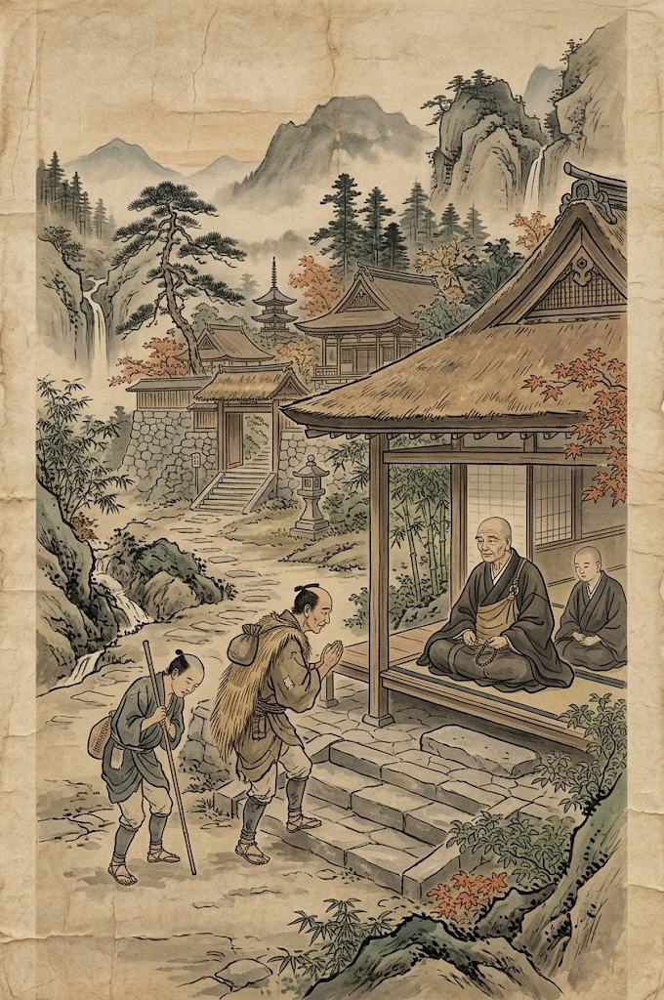
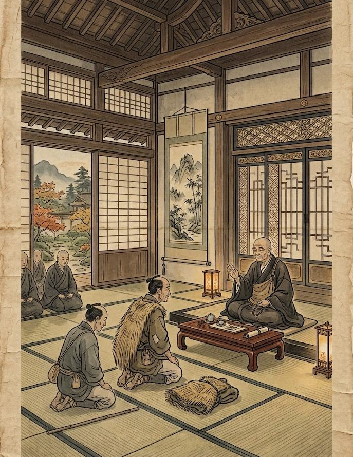

Храм-судья
Не каждый спор должен заканчиваться враждой или боем. Иногда людям необходимо лишь третье лицо, которое сможет выслушать обе стороны и помочь им увидеть ситуацию со стороны.
Не каждый спор должен заканчиваться враждой или боем. Иногда людям необходимо лишь третье лицо, которое сможет выслушать обе стороны и помочь им увидеть ситуацию со стороны. Поэтому Сангха может выступать в роли посредника и судьи в различных спорах между людьми и организациями.

Разбирательство
Любой человек или организация может обратиться в храм с просьбой рассмотреть спор. Это может быть конфликт между двумя людьми, разногласие между кланами, спор из-за имущества, нарушенного обещания или другого поступка, который стал причиной конфликта. Перед разбирательством монах выслушивает обе стороны. Каждый участник получает возможность спокойно рассказать о произошедшем и объяснить свою позицию. При необходимости могут быть приглашены свидетели, в том числе монах, который ранее присутствовал при спорном событии. После этого Сангха выносит своё решение. Однако решение храма не является законом или приказом правителя. Монах не обладает властью заставить человека подчиниться. Это прежде всего моральное наставление, основанное на принципах Дхармы, справедливости, ответственности и сострадания.
Решение храма
Главная задача монаха - не просто определить, кто "прав", а понять, к чему приведёт дальнейшее развитие конфликта. Иногда справедливым решением может быть возвращение имущества, выполнение данного обещания или принесение извинений. В других случаях стороны могут получить предложение о примирении или заключении нового соглашения. Если одна из сторон действительно совершила неправоту, монах может прямо указать на это. При этом Сангха не должна унижать человека или превращать разбирательство в публичное наказание. Цель заключается в том, чтобы остановить конфликт и помочь людям принять последствия собственных поступков.

Нейтральность
Храм не принимает сторону человека только из-за его происхождения, богатства или принадлежности к определённому клану. Перед Сангхой одинаково рассматриваются крестьянин и самурай, простой человек и представитель могущественной организации. Если стороны согласились обратиться к храму, они должны быть готовы выслушать решение и уважать порядок проведения разбирательства. Если же человек приходит только для того, чтобы угрожать другой стороне или заранее отказывается от любого разговора, монах вправе отказаться от проведения суда.
Мир приходит изнутри. Не ищи его снаружи.Будда Шьякмуни